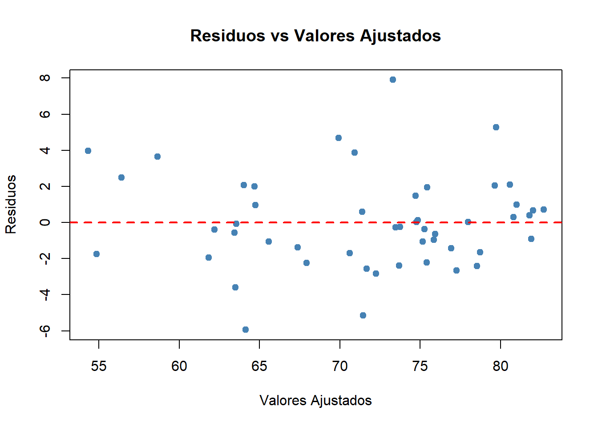
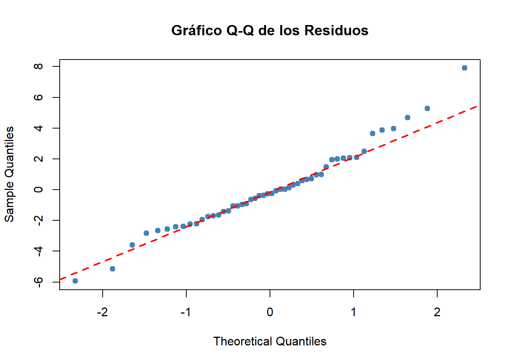

Intervalo de confianza
para una sola muestra para la expectativa de vida en 2015
En estudios de salud pública, calcular el promedio muestral de la
esperanza de vida resulta útil, pero no suficiente para hacer
inferencias sólidas. Estimar un intervalo de confianza del 95% para la
media de la esperanza de vida en 2015 permite no solo conocer ese valor
central, sino también establecer un rango de valores plausibles en el
que probablemente se encuentra la media poblacional real. Con la muestra
seleccionada de 50 países, este enfoque resulta especialmente relevante,
ya que incorpora la incertidumbre muestral y refuerza la validez y
generalización de los resultados.
Sin embargo, antes de aplicar el método clásico para calcular un
intervalo de confianza para la media, es importante comprobar si la
población de la que procede la muestra se distribuye de forma
aproximadamente normal, pues este supuesto garantiza que el intervalo
será estadísticamente válido, especialmente en muestras pequeñas. En
este caso, al contar con una muestra de tamaño 50, se considera
suficientemente grande para que, según el Teorema Central del Límite, la
distribución muestral de la media tienda a ser normal, incluso si los
datos originales no lo son perfectamente. Aun así, realizar una prueba
de normalidad sobre los datos es una práctica recomendable para
confirmar que no existen desviaciones graves que invaliden el
modelo.
Prueba de normalidad
de Shapiro-Wilk
3. Estadístico de
prueba
datos_2015 <- datos_limpios %>% filter(Year == 2015)
vida_2015 <- datos_2015$`Life expectancy`
normalidad <- shapiro.test(vida_2015)
normalidad
##
## Shapiro-Wilk normality test
##
## data: vida_2015
## W = 0.96443, p-value = 0.0001332
4. Comparación e
interpretación
\[
p = 0,0001332 < \alpha = 0.05
\] Dado que el p-valor es menor que el nivel de significación (α
= 0.05), se rechaza la hipótesis nula (H₀).
5. Conclusión
Existe evidencia estadísticamente significativa para afirmar que los
datos de esperanza de vida en 2015 no siguen una distribución normal, ya
que el p-valor obtenido (0.0001332) es menor que el nivel de
significación (α = 0.05). Sin embargo, dado que el tamaño de la muestra
es n = 50 ≥ 30, se puede invocar el Teorema Central del Límite, el cual
establece que, para muestras lo suficientemente grandes, la distribución
muestral de la media tiende a la normalidad, independientemente de la
forma de la población original.
Intervalo de
confianza del 95% de una muestra
En este análisis se ha seleccionado la variable cuantitativa Life
expectancy (esperanza de vida) correspondiente al año 2015, tomando una
muestra de 50 países del total disponible en la base de datos. El
objetivo es estimar, con un nivel de confianza del 95%, el valor medio
poblacional de la esperanza de vida en ese año. Cabe mencionar, que al
tratarse de una muestra y no conocerse la desviación estándar
poblacional, se empleará la desviación típica muestral como estimador,
por lo que se recurrirá al uso de la distribución t de Student.
# Extraer la variable de interés desde la muestra
vida_muestra <- muestra_final$`Life expectancy`
# Calcular tamaño, media, desviación y error estándar
n <- length(vida_muestra)
media <- mean(vida_muestra)
desv <- sd(vida_muestra)
error <- desv / sqrt(n)
# Valor t crítico (nivel de confianza 95%)
t <- qt(0.975, df = n - 1)
# Calcular intervalo
li <- media - t * error
ls <- media + t * error
# Mostrar resultados de forma sencilla
cat("Intervalo de confianza del 95% para la media:\n")
## Intervalo de confianza del 95% para la media:
cat(sprintf("[%.2f, %.2f]\n", li, ls))
## [69.46, 74.01]
cat(sprintf("Media: %.2f | Error estándar: %.2f | t crítico: %.3f\n", media, error, t))
## Media: 71.73 | Error estándar: 1.13 | t crítico: 2.010
Con base en los resultados obtenidos, se ha estimado un intervalo de
confianza del 95% para la media poblacional de la esperanza de vida en
el año 2015, que se encuentra entre 69,46 y 74,01 años. Es decir: 69,46
< μ < 74,01 Esto indica que, con un 95% de confianza, se puede
afirmar que la esperanza de vida media global en 2015 se sitúa dentro de
ese rango. La estimación refleja una medida central de longevidad para
ese año y ofrece un valor de referencia útil para interpretar la
situación general de salud a nivel mundial en ese periodo.
Intervalo de confianza
para dos muestras con respecto a la variable expectativa de vida
En este apartado se pretende comparar la media de la esperanza de
vida entre dos grupos de países clasificados según su estatus de
desarrollo: Developed y Developing. Esta variable, clave en los estudios
de salud pública y calidad de vida, puede reflejar importantes
desigualdades estructurales a nivel global. El objetivo es construir un
intervalo de confianza del 95% para la diferencia de medias de la
esperanza de vida entre ambos grupos en el año 2015, y con ello estimar
en qué medida la condición de desarrollo está asociada a una mayor o
menor longevidad media. Sin embargo, antes de realizar el análisis, es
necesario verificar si se cumplen los supuestos estadísticos que
justifican el uso de métodos paramétricos:
La normalidad de los datos dentro de cada grupo.
La igualdad o desigualdad de varianzas entre las dos
poblaciones.
Prueba de normalidad
para paises en desarrollo y desarrollados
3. Estadístico de
prueba
datos_2015 <- datos_limpios %>%
filter(Year == 2015)
grupo1 <- datos_2015 %>% filter(Status == "Developed") %>% pull(`Life expectancy`)
grupo2 <- datos_2015 %>% filter(Status == "Developing") %>% pull(`Life expectancy`)
shapiro.test(grupo1) # Developed
##
## Shapiro-Wilk normality test
##
## data: grupo1
## W = 0.93567, p-value = 0.05648
shapiro.test(grupo2) # Developing
##
## Shapiro-Wilk normality test
##
## data: grupo2
## W = 0.95859, p-value = 0.0001726
4. Comparación e
interpretación
5. Conclusión
Tras aplicar la prueba de normalidad de Shapiro-Wilk a los dos grupos
definidos por el estatus de desarrollo, se obtuvieron resultados
diferenciados. En el grupo de países desarrollados (Developed), el valor
p fue de 0.05648, superior al nivel de significación α = 0.05, por lo
que no se rechaza la hipótesis nula de normalidad, lo cual indica que
los datos de esperanza de vida en este grupo pueden considerarse
normalmente distribuidos.
En cambio, para el grupo de países en desarrollo (Developing), el
valor p fue de 0.0001726, inferior a α = 0.05, lo que lleva a rechazar
la hipótesis nula. Por tanto, se concluye que los datos de esperanza de
vida en este grupo no se distribuyen normalmente.Sin embargo, conforme
al resultado del chunck posterior, aunque la prueba de Shapiro-Wilk
indicó que la variable ‘Life expectancy’ en el grupo de países en
desarrollo (Developing) no sigue una distribución normal (p = 0.0001726
< 0.05),el tamaño muestral de este grupo es de 39 observaciones, por
lo que con base al Teorema Central del Límite, se considera razonable
asumir que la distribución de la media muestral se aproxima a una
normal.
n_developing_muestra <- muestra_final %>%
filter(Status == "Developing") %>%
nrow()
cat("Tamaño de la muestra para países en desarrollo (dentro de la muestra):", n_developing_muestra, "observaciones\n")
## Tamaño de la muestra para países en desarrollo (dentro de la muestra): 39 observaciones
Diferencia de
varianzas
##
## F test to compare two variances
##
## data: grupo1 and grupo2
## F = 0.21299, num df = 31, denom df = 150, p-value = 4.531e-06
## alternative hypothesis: true ratio of variances is not equal to 1
## 95 percent confidence interval:
## 0.1286495 0.3902998
## sample estimates:
## ratio of variances
## 0.2129877
Intervalo de confianza del 95% para el cociente de varianzas:
0,1286 < σ²_Developed / σ²_Developing < 0,3903
Como el valor 1 no se encuentra dentro del intervalo de confianza, se
rechaza la hipótesis nula de igualdad de varianzas.Por tanto, se
concluye que las varianzas de ambos grupos son significativamente
diferentes,y se debe aplicar el t-test con varianzas desiguales.
Intervalo de
confianza del 95% de dos muestras
# Filtrar datos del año 2015
datos_2015 <- datos_limpios %>%
filter(Year == 2015)
# Extraer la variable para cada grupo
grupo_desarrollado <- datos_2015 %>%
filter(Status == "Developed") %>%
pull(`Life expectancy`)
grupo_desarrollo <- datos_2015 %>%
filter(Status == "Developing") %>%
pull(`Life expectancy`)
# Prueba t con varianzas desiguales
resultado_ic <- t.test(grupo_desarrollado, grupo_desarrollo,
alternative = "two.sided",
var.equal = FALSE,
conf.level = 0.95)
# Extraer intervalo y diferencia
lim_inf <- resultado_ic$conf.int[1]
lim_sup <- resultado_ic$conf.int[2]
diferencia_media <- resultado_ic$estimate[1] - resultado_ic$estimate[2]
cat("Intervalo de confianza del 95% para la diferencia de medias:\n")
## Intervalo de confianza del 95% para la diferencia de medias:
cat(sprintf(" %.2f < μ_Developed - μ_Developing < %.2f\n\n", lim_inf, lim_sup))
## 9.31 < μ_Developed - μ_Developing < 12.73
cat(sprintf("Diferencia media estimada: %.2f años\n", diferencia_media))
## Diferencia media estimada: 11.02 años
El análisis del intervalo de confianza del 95% para la diferencia de
medias entre los países desarrollados y en desarrollo muestra una
diferencia significativa en la esperanza de vida. El intervalo calculado
entre 9,31 y 12,73 años indica que, con un alto nivel de certeza, los
países desarrollados presentan una esperanza de vida considerablemente
superior respecto a los países en desarrollo.
En concreto, la diferencia media estimada es de 11,02 años, lo que
significa que, en promedio, las personas que viven en países
desarrollados pueden esperar vivir más de una década más que quienes
residen en países en desarrollo. Este dato no solo es estadísticamente
significativo, sino que también tiene una gran relevancia práctica y
social, ya que refleja profundas diferencias estructurales en términos
de calidad de vida, acceso a recursos sanitarios, condiciones
ambientales, educación y estabilidad económica.
El hecho de que el intervalo no contenga el valor cero confirma que
la diferencia no es producto del azar. Por tanto, podemos afirmar con
evidencia estadística que el estatus de desarrollo está claramente
asociado a una mayor longevidad. En los países desarrollados, la
esperanza de vida tiende a ser más alta gracias a sistemas de salud más
robustos, mejores condiciones de vida y mayor prevención de
enfermedades, entre otros factores. Por el contrario, en muchos países
en desarrollo persisten desafíos estructurales que limitan el acceso a
servicios esenciales, lo que se traduce en una menor esperanza de
vida.
Recomendaciones ante no
normalidad de la población
Cuando los datos no cumplen el supuesto de normalidad, como ocurrió
en algunos casos del presente análisis, es fundamental considerar
alternativas metodológicas que se adapten mejor a la estructura real de
la información. Una de las primeras opciones es el uso de pruebas no
paramétricas, que permiten realizar comparaciones o contrastes sin
asumir que los datos siguen una distribución normal. Estas pruebas son
especialmente útiles con muestras pequeñas o cuando existen valores
atípicos. Por ejemplo, la prueba de Mann–Whitney U permite comparar dos
grupos independientes sin necesidad de suponer normalidad ni igualdad de
varianzas, siendo apropiada para variables como la esperanza de vida
según el nivel de desarrollo. La prueba de Kolmogorov–Smirnov, por su
parte, permite comparar dos distribuciones completas o evaluar el ajuste
a una distribución teórica, mientras que la prueba de Friedman se
utiliza en contextos de medidas repetidas o comparaciones entre más de
dos condiciones dentro del mismo grupo (Siegel
and Castellan 1988; Conover 1999).
Otra estrategia es aplicar transformaciones a los datos con el fin de
reducir la asimetría y mejorar el ajuste a la normalidad. La
transformación logarítmica es especialmente útil para variables sesgadas
a la derecha, como ingresos o gasto en salud. La raíz cuadrada puede
utilizarse con datos de conteo o tasas, ayudando a estabilizar la
varianza. Además, la transformación Box–Cox representa una alternativa
más flexible, ya que estima automáticamente el tipo de transformación
más adecuada para acercar la distribución a la normalidad, incluso
cuando no es evidente qué método aplicar (Box and
Cox 1964; Osborne 2010).
Además de estas opciones, existen enfoques robustos y empíricos que
no dependen de supuestos fuertes sobre la distribución de los datos. Uno
de los más destacados es el método bootstrap, que permite estimar
intervalos de confianza generando múltiples muestras con reemplazo a
partir de la muestra original. A partir de esas re-muestras se calcula
empíricamente la distribución del estadístico de interés (media,
mediana, etc.), sin requerir normalidad. Esto lo convierte en una
herramienta versátil y poderosa, especialmente en contextos con alta
variabilidad o estructura desconocida (Efron and
Tibshirani 1993). En el caso de modelos de regresión, también
pueden emplearse modelos robustos, como la regresión M o la regresión
cuantílica, los cuales toleran mejor la presencia de valores atípicos y
errores no normales que la regresión lineal clásica (Huber and Ronchetti 2009).
Modelo de regresión
lineal múltiple: efecto conjunto de variables seleccionadas
Identificación de la
variable dependiente y de las independientes
En el presente modelo de regresión lineal múltiple, se busca explicar
la esperanza de vida (Life expectancy) durante el 2015, a partir de un
conjunto de factores estructurales previamente seleccionados por su
relevancia teórica y empírica. Por tanto, las variables del modelo se
clasifican de la siguiente manera:
Variable dependiente (respuesta):
- Life expectancy: representa el número promedio de
años que una persona puede esperar vivir desde su nacimiento, bajo
condiciones de mortalidad actuales. Es una variable cuantitativa
continua, medida en años. Se considera dependiente porque su valor se ve
influido por el comportamiento de las demás variables del modelo.
Variables independientes (predictoras):
HIV/AIDS: porcentaje de la población adulta
infectada con VIH, configurandose como una dimensión crítica de salud
pública.
Income composition of resources: índice entre 0
y 1 que refleja la equidad y composición de los ingresos
disponibles.
Adult Mortality: número de muertes por cada mil
habitantes entre los 15 y 60 años, representando el riesgo estructural
de muerte en edad adulta.
Estas variables se consideran independientes o predictoras porque su
función en el modelo es explicar o predecir el comportamiento de la
variable dependiente. No dependen del valor de la esperanza de vida,
sino que actúan como insumos cuya combinación permite estimar y
comprender las variaciones en dicha variable. Además, fueron
seleccionadas por su capacidad para capturar dimensiones clave del
desarrollo humano: salud, equidad económica y condiciones de vida.
Ajuste del modelo de
regresión lineal
Una vez identificadas las variables que conforman el modelo, se
procede a realizar el ajuste mediante una regresión lineal múltiple, el
cual estima los coeficientes que cuantifican el efecto de cada variable
independiente sobre la esperanza de vida, manteniendo constantes las
demás. A partir del modelo ajustado se podrán interpretar la magnitud,
dirección y significancia estadística de cada relación. A continuación,
se muestra el código utilizado para realizar dicho ajuste:
# Modelo de regresión lineal múltiple
modelo <- lm(`Life expectancy` ~ `HIV/AIDS` +
`Income composition of resources` + `Adult Mortality` ,
data = muestra_final)
summary(modelo)
##
## Call:
## lm(formula = `Life expectancy` ~ `HIV/AIDS` + `Income composition of resources` +
## `Adult Mortality`, data = muestra_final)
##
## Residuals:
## Min 1Q Median 3Q Max
## -5.9406 -1.6848 -0.2575 1.3678 7.9027
##
## Coefficients:
## Estimate Std. Error t value Pr(>|t|)
## (Intercept) 50.954836 2.501658 20.368 < 2e-16 ***
## `HIV/AIDS` -1.564881 0.391649 -3.996 0.000231 ***
## `Income composition of resources` 34.787011 2.974823 11.694 2.23e-15 ***
## `Adult Mortality` -0.015244 0.005211 -2.926 0.005325 **
## ---
## Signif. codes: 0 '***' 0.001 '**' 0.01 '*' 0.05 '.' 0.1 ' ' 1
##
## Residual standard error: 2.674 on 46 degrees of freedom
## Multiple R-squared: 0.8949, Adjusted R-squared: 0.8881
## F-statistic: 130.6 on 3 and 46 DF, p-value: < 2.2e-16
A partir de la salida del modelo de regresión lineal ajustado en R,
obtenemos la siguiente ecuación de la recta ajustada:
\[\widehat{\text{Life expectancy}} = 50.95
- 1.56 \times \text{HIV/AIDS} + 34.78 \times \text{Income composition of
resources} - 0.015 \times \text{Adult Mortality}\]
En donde:
\(\beta_0\) Intercepto (50.95):
Representa la esperanza de vida estimada cuando todas las variables
independientes son iguales a cero. Aunque este escenario es hipotético
(por ejemplo, 0 en prevalencia de VIH, sin ingresos y sin mortalidad
adulta), el intercepto es esencial para ajustar el modelo y sirve como
base en la predicción de la esperanza de vida.
\(\beta_1\) HIV/AIDS (-1.56): Por
cada punto porcentual adicional en la prevalencia de VIH/SIDA en la
población adulta (de 15 a 49 años), se estima que la esperanza de vida
disminuye en promedio 1.56 años, manteniendo constantes las demás
variables. Este resultado refleja cómo la presencia de enfermedades
infecciosas impacta negativamente la longevidad de una población.
\(\beta_2\) Income composition of
resources (34.79): Por cada unidad adicional en el índice de composición
del ingreso (que va de 0 a 1), la esperanza de vida aumenta en promedio
34.79 años. Este coeficiente indica que un mejor acceso a recursos
económicos está estrechamente relacionado con mejores condiciones de
salud y, por tanto, con una mayor esperanza de vida.
\(\beta_3\) Adult Mortality
(-0.0152): Por cada muerte adicional por cada mil adultos entre 15 y 60
años, la esperanza de vida se reduce en promedio 0.015 años. Aunque el
valor es pequeño, su efecto acumulado puede ser significativo en
contextos de alta mortalidad adulta, reflejando ambientes con menor
bienestar y mayor vulnerabilidad social.
Coeficiente de
determinación
# Extraer el R^2 ajustado desde el modelo
r2_ajustado <- summary(modelo)$adj.r.squared
cat("El coeficiente de determinación ajustado (R² ajustado) del modelo es:", round(r2_ajustado, 4))
## El coeficiente de determinación ajustado (R² ajustado) del modelo es: 0.8881
El coeficiente de determinación ajustado (\(R^2\) ajustado) del modelo es 0.8881, lo
que indica que aproximadamente el 88.81% de la variabilidad en la
esperanza de vida entre los países analizados puede explicarse de forma
conjunta por las variables HIV/AIDS, Income composition of resources y
Adult Mortality. Este valor refleja un excelente nivel de ajuste,
especialmente considerando que se trabajó con datos correspondientes
exclusivamente al año 2015, y que el modelo fue construido a partir de
solo tres variables predictoras seleccionadas de forma deliberada. El
11.19% restante de variabilidad no explicada puede deberse a otros
factores no incluidos en el modelo, como el acceso efectivo a servicios
de salud, la infraestructura hospitalaria, la calidad ambiental,
factores demográficos, políticas sociales o diferencias culturales entre
países. Esto sugiere que, si bien el modelo propuesto logra capturar
gran parte del comportamiento de la esperanza de vida, aún existen otros
determinantes que podrían incorporarse en estudios posteriores para
enriquecer la explicación del fenómeno desde una perspectiva más amplia
y multicausal.
Coeficiente de
correlación
# Calcular coeficientes de correlación de Pearson entre Life expectancy y cada variable explicativa
cor_pearson_hiv <- cor(muestra_final$`Life expectancy`, muestra_final$`HIV/AIDS`, method = "pearson")
cor_pearson_income <- cor(muestra_final$`Life expectancy`, muestra_final$`Income composition of resources`, method = "pearson")
cor_pearson_mortality <- cor(muestra_final$`Life expectancy`, muestra_final$`Adult Mortality`, method = "pearson")
cat("Correlación Life expectancy ~ HIV/AIDS:", round(cor_pearson_hiv, 4), "\n")
## Correlación Life expectancy ~ HIV/AIDS: -0.6613
cat("Correlación Life expectancy ~ Income composition of resources:", round(cor_pearson_income, 4), "\n")
## Correlación Life expectancy ~ Income composition of resources: 0.8972
cat("Correlación Life expectancy ~ Adult Mortality:", round(cor_pearson_mortality, 4), "\n")
## Correlación Life expectancy ~ Adult Mortality: -0.6792
La correlación entre Life expectancy y HIV/AIDS es de -0.6613, lo
cual representa una relación negativa de magnitud moderada a fuerte.
Esto indica que, a medida que aumenta la prevalencia de VIH/SIDA en la
población adulta, la esperanza de vida tiende a disminuir. Aunque no se
trata de una asociación perfecta, sí muestra una tendencia clara que
respalda la inclusión de esta variable como un factor relevante dentro
del modelo explicativo.
En el caso de Income composition of resources, la correlación con la
esperanza de vida es de 0.8972, lo que representa una asociación
positiva muy fuerte. Este resultado sugiere que los países con mayor
acceso y equidad en los recursos económicos suelen tener una mayor
esperanza de vida. Esto refuerza la idea de que el entorno
socioeconómico juega un papel determinante en las condiciones de salud y
longevidad de la población.
Por su parte, Adult Mortality presenta una correlación de -0.6792 con
la esperanza de vida, lo cual evidencia una relación negativa
moderadamente fuerte. En contextos donde la mortalidad adulta es más
elevada, la esperanza de vida tiende a reducirse notablemente, ya que
las muertes en edades productivas afectan directamente el promedio de
años de vida esperados al nacer. Este patrón justifica la inclusión de
esta variable en el análisis y aporta información importante sobre el
contexto de salud de los países.
ANOVA y prueba global
de significancia
El análisis de varianza (ANOVA) aplicado a modelos de regresión
permite evaluar si el conjunto de variables independientes tiene un
efecto significativo sobre la variable dependiente. Esta prueba divide
la variabilidad total de los datos en dos componentes: la variabilidad
explicada por el modelo (regresión) y la no
explicada (error o residuos). La prueba F compara estas dos
fuentes de variación mediante una razón de medias cuadráticas, si el
resultado es significativo, se concluye que el modelo general tiene
capacidad explicativa. A continuación, se presenta el código y los
resultados del ANOVA para nuestro modelo de regresión:
## Analysis of Variance Table
##
## Response: Life expectancy
## Df Sum Sq Mean Sq F value Pr(>F)
## `HIV/AIDS` 1 1368.59 1368.59 191.4644 < 2.2e-16 ***
## `Income composition of resources` 1 1370.97 1370.97 191.7969 < 2.2e-16 ***
## `Adult Mortality` 1 61.18 61.18 8.5587 0.005325 **
## Residuals 46 328.81 7.15
## ---
## Signif. codes: 0 '***' 0.001 '**' 0.01 '*' 0.05 '.' 0.1 ' ' 1
El anterior modelo, se puede compectar mejor de la siguinte
forma:
sct <- sum((muestra_final$`Life expectancy` - mean(muestra_final$`Life expectancy`))^2)
scr <- sum((fitted(modelo) - mean(muestra_final$`Life expectancy`))^2)
sce <- sct - scr
df_reg <- length(coef(modelo)) - 1
df_error <- nrow(muestra_final) - df_reg - 1
df_total <- nrow(muestra_final) - 1
mcr <- scr / df_reg
mce <- sce / df_error
f_value <- mcr / mce
p_value <- 1 - pf(f_value, df_reg, df_error)
p_value_formatted <- format(p_value, scientific = TRUE, digits = 10)
resultados_anova <- data.frame(
Fuente = c("Regresión (Modelo)", "Error (Residuos)", "Total"),
SCR = c(scr, sce, sct),
GL = c(df_reg, df_error, df_total),
MCR = c(mcr, mce, NA),
F_value = c(f_value, NA, NA),
P_valor = c(p_value_formatted, NA, NA)
)
colnames(resultados_anova) <- c(
"Fuente",
"Suma de Cuadrados",
"Grados de Libertad",
"Media Cuadrática",
"Valor F",
"P-Valor"
)
library(kableExtra)
resultados_anova %>%
kbl(
format = "html",
caption = "Resultados del ANOVA para el Modelo de Regresión",
align = "c",
digits = 3
) %>%
kable_styling(
bootstrap_options = c("striped", "hover", "responsive", "condensed"),
full_width = FALSE,
position = "center"
) %>%
column_spec(1, bold = TRUE) %>%
row_spec(0, bold = TRUE, background = "#DBDBDB") %>%
row_spec(1:2, background = "white")
Resultados del ANOVA para el Modelo de Regresión
|
Fuente
|
Suma de Cuadrados
|
Grados de Libertad
|
Media Cuadrática
|
Valor F
|
P-Valor
|
|
Regresión (Modelo)
|
2800.743
|
3
|
933.581
|
130.607
|
0e+00
|
|
Error (Residuos)
|
328.810
|
46
|
7.148
|
NA
|
NA
|
|
Total
|
3129.552
|
49
|
NA
|
NA
|
NA
|
Como se observa, la suma de cuadrados de la regresión (SCR =
2800.743) representa una porción muy significativa de la suma total de
cuadrados (SCT = 3129.552), lo que indica que el modelo explica la mayor
parte de la variabilidad en la variable dependiente Life expectancy. El
valor F obtenido es 130.607, con un p-valor prácticamente igual a cero
(0e+00), lo cual indica que el modelo en su conjunto es altamente
significativo desde el punto de vista estadístico. En otras palabras,
hay evidencia suficiente para afirmar que al menos una de las variables
independientes (HIV/AIDS, Income composition of resources o Adult
Mortality) tiene un efecto significativo sobre la esperanza de vida.
Para sustentar esta conclusión se plantea la siguiente prueba de
hipótesis global basada en el estadístico F:
1. Formulación de la hipótesis nula y
alternativa
\(H_0\): Ninguna de las
variables independientes tiene un efecto significativo sobre la variable
dependiente (es decir, todos los coeficientes de las variables
explicativas son iguales a cero).
\(H_0: \beta_1 = \beta_2 = \beta_3 =
\beta_4 = 0\)
\(H_1\): Al menos uno de los
coeficientes de las variables independientes es diferente de cero.
\(H_1:\) Al menos un \(\beta_i \neq 0\)
2. Nivel de significancia
El nivel de significancia (\(\alpha\)) es el umbral que utilizamos para
decidir si podemos rechazar la hipótesis nula. En este
caso, hemos establecido el nivel de significancia en \(\alpha = 0.05\), lo que significa que si el
p-valor calculado es menor que 0.05, rechazamos la
hipótesis nula y concluimos que al menos una de las variables
independientes tiene un efecto significativo sobre la esperanza
de vida.
3. Estadístico de prueba
Para esto tenemos en cuenta lo siguiente:
# Resultado ANOVA a partir del modelo
anova_resultado <- anova(modelo)
# Obtener las sumas de cuadrados
scr <- sum(anova_resultado$`Sum Sq`[1:3]) # Suma de Cuadrados de la Regresión
sce <- anova_resultado$`Sum Sq`[4] # Suma de Cuadrados del Error
# Obtener los grados de libertad
df_reg <- sum(anova_resultado$Df[1:3])
df_error <- anova_resultado$Df[4]
# Calcular valor F
valor_F <- (scr / df_reg) / (sce / df_error)
cat("El valor F calculado es:", round(valor_F, 2), "\n")
## El valor F calculado es: 130.61
4. Criterio de decisión
# Calcular el valor p asociado al valor F
p_value <- 1 - pf(valor_F, df_reg, df_error)
cat("El valor p asociado al valor F calculado es:", format(p_value, scientific = TRUE), "\n")
## El valor p asociado al valor F calculado es: 0e+00
5. Interpretación y conclusión
El valor p obtenido a partir del estadístico
F representa la probabilidad de observar una
variabilidad tan alta explicada por el modelo si la hipótesis nula fuera
cierta, es decir, si ninguna de las variables predictoras tuviera un
efecto significativo sobre la variable dependiente. En este caso, el
valor p calculado es 0e+00, lo que en términos
prácticos significa que es extremadamente cercano a
cero y mucho menor que cualquier nivel de significancia usual,
como \(\\alpha = 0.05\). Este resultado
indica que la probabilidad de que el ajuste observado en el modelo haya
ocurrido por azar es prácticamente nula. Por lo tanto, se
rechaza la hipótesis nula y se concluye que al menos
una de las variables explicativas (HIV/AIDS,
Income composition of resources o Adult Mortality)
tiene un efecto estadísticamente significativo sobre la
esperanza de vida. Esto valida que el modelo general
propuesto tiene una capacidad real para explicar el comportamiento de la
variable dependiente y que las relaciones observadas entre las variables
no son producto del azar.
Pruebas de
significancia individuales
A diferencia de la prueba global, que evalúa el impacto conjunto de
todas las variables, en esta sección analizamos cada variable
independiente por separado. Para cada una, comparamos el valor p con el
nivel de significancia (𝛼= 0.05 para determinar si rechazamos la
hipótesis nula y concluimos que la variable tiene un impacto
significativo sobre la expectativa de vida.
summary_resultado <- summary(modelo)
coeficientes <- summary_resultado$coefficients
alpha <- 0.05
variables <- c("HIV/AIDS", "Income composition of resources", "Adult Mortality")
hipotesis_table <- data.frame(
Variable = variables,
`Hipótesis nula` = c("$H_0: \\beta_1 = 0$", "$H_0: \\beta_2 = 0$", "$H_0: \\beta_3 = 0$"),
`Hipótesis alternativa` = c("$H_1: \\beta_1 \\neq 0$", "$H_1: \\beta_2 \\neq 0$", "$H_1: \\beta_3 \\neq 0$"),
`Nivel de significancia` = rep("0.05", 3),
`Valor t` = round(coeficientes[2:4, 3], 3),
gl = rep(summary_resultado$df[2], 3),
`Valor p` = format(coeficientes[2:4, 4], scientific = TRUE, digits = 3),
Comparación = ifelse(coeficientes[2:4, 4] < alpha, "Valor p < α", "Valor p > α"),
Decisión = ifelse(coeficientes[2:4, 4] < alpha, "Rechazamos $H_0$", "No rechazamos $H_0$")
)
# Cambiar los nombres visibles de las columnas para la tabla
colnames(hipotesis_table) <- c(
"Variable",
"Hipótesis nula",
"Hipótesis alternativa",
"Nivel de significancia",
"Valor t",
"gl",
"Valor p",
"Comparación",
"Decisión"
)
hipotesis_table %>%
kbl(
format = "html",
caption = "Prueba de Hipótesis para las Variables Independientes del Modelo",
escape = FALSE,
align = "c",
row.names = FALSE
) %>%
kable_styling(
bootstrap_options = c("striped", "hover", "condensed", "bordered"),
full_width = FALSE,
position = "center",
font_size = 13
) %>%
row_spec(0, bold = TRUE, background = "#e0e0e0")
Prueba de Hipótesis para las Variables Independientes del Modelo
|
Variable
|
Hipótesis nula
|
Hipótesis alternativa
|
Nivel de significancia
|
Valor t
|
gl
|
Valor p
|
Comparación
|
Decisión
|
|
HIV/AIDS
|
\(H_0: \beta_1 = 0\)
|
\(H_1: \beta_1 \neq 0\)
|
0.05
|
-3.996
|
46
|
2.31e-04
|
Valor p < α
|
Rechazamos \(H_0\)
|
|
Income composition of resources
|
\(H_0: \beta_2 = 0\)
|
\(H_1: \beta_2 \neq 0\)
|
0.05
|
11.694
|
46
|
2.23e-15
|
Valor p < α
|
Rechazamos \(H_0\)
|
|
Adult Mortality
|
\(H_0: \beta_3 = 0\)
|
\(H_1: \beta_3 \neq 0\)
|
0.05
|
-2.926
|
46
|
5.33e-03
|
Valor p < α
|
Rechazamos \(H_0\)
|
Los resultados de la prueba de hipótesis individual para cada
coeficiente de regresión permiten evaluar si cada variable explicativa
tiene un efecto estadísticamente significativo sobre la variable
dependiente Life expectancy. Para cada predictor, se plantea una
hipótesis nula que afirma que su coeficiente es igual a cero (\(H_0: \beta_i = 0\)), frente a una hipótesis
alternativa que sostiene que es diferente de cero (\(H_1: \beta_i \ne 0\)). El criterio de
decisión se basa en comparar el valor p con un nivel de significancia
\(\alpha = 0.05\).
Para la variable HIV/AIDS, el valor t es -3.996 y el valor p es
2.31e-04, claramente menor a 0.05. Esto indica que el coeficiente es
significativamente distinto de cero, por lo tanto, se rechaza la
hipótesis nula. Se concluye que HIV/AIDS tiene un efecto
estadísticamente significativo sobre la esperanza de vida, y la relación
negativa del coeficiente confirma que a mayor prevalencia de VIH/SIDA,
menor esperanza de vida.
En el caso de Income composition of resources, el valor t es 11.694 y
el valor p es 2.23e-15, un valor extremadamente bajo que refuerza su
significancia estadística. Al ser mucho menor que 0.05, se rechaza
también la hipótesis nula, lo cual confirma que esta variable tiene un
efecto muy significativo sobre la esperanza de vida. Además, el signo
positivo del coeficiente refuerza su interpretación como un factor que
contribuye al aumento de la longevidad.
Por su parte, Adult Mortality presenta un valor t de -2.926 y un
valor p de 0.005325, también menor al umbral de 0.05. Esto lleva a
rechazar la hipótesis nula y concluir que la mortalidad adulta tiene un
efecto significativo sobre la esperanza de vida. Su coeficiente negativo
indica que un aumento en la mortalidad adulta se asocia con una
disminución en la esperanza de vida.
En conjunto, estos resultados indican que todas las variables
predictoras incluidas en el modelo son estadísticamente significativas
de forma individual. Esto respalda su inclusión en el análisis y
refuerza la validez del modelo propuesto con datos del año 2015.
Supuestos del modelo de regresión lineal
Linealidad
Este supuesto establece que la relación entre cada variable
independiente y la variable dependiente sea lineal, es decir, que ante
cambios en cada variable independiente, la variable dependiente también
cambie. Para la comprobación del cumplimiento de este supuesto, se
procederá a emplear una gráfica de valores ajustados vs residuos y
pruebas de hipótesis de Pearson para verificar la asociación lineal
entre cada variable independiente y la pendiente.
Gráfica de
valores ajustados vs residuos
plot(modelo$fitted.values, modelo$residuals,
main = "Residuos vs Valores Ajustados",
xlab = "Valores Ajustados",
ylab = "Residuos",
pch = 19, col = "steelblue")
abline(h = 0, col = "red", lwd = 2, lty = 2)

Como se observa, los residuos se distribuyen de forma relativamente
aleatoria alrededor de la línea horizontal en cero, sin formar curvas ni
estructuras definidas, lo que indica que la relación entre las variables
independientes y la esperanza de vida es aproximadamente lineal. No se
observa un patrón en forma de U o de campana que sugiera una relación no
lineal, lo cual respalda que el modelo esté correctamente especificado
en términos de forma funcional.
Prueba de
hipótesis de Pearson
Se procederá a evaluar la existencia de una relación lineal entre
cada variable independiente y la esperanza de vida mediante la prueba de
correlación de Pearson:
1. Formulación de hipótesis
(\(H_0\)):
\(\rho = 0\)
No existe asociación lineal entre la variable independiente y la
variable dependiente.
(\(H_1\)):
\(\rho \neq 0\)
Existe asociación lineal entre la variable independiente y la variable
dependiente.
2. Nivel de significancia
\(\alpha = 0.05\)
3. Estadístico de prueba y valor_p
Prueba de Hipótesis para la Correlación de Pearson entre cada Variable
Independiente y Life Expectancy
|
Variable
|
Hipótesis nula
|
Hipótesis alternativa
|
Nivel de significancia
|
Valor t
|
gl
|
Valor p
|
Comparación
|
Decisión
|
|
HIV/AIDS
|
\(H_0: \rho = 0\)
|
\(H_1: \rho \neq 0\)
|
0.05
|
-36.236
|
2926
|
7.67e-238
|
Valor p < α
|
Rechazamos \(H_0\)
|
|
Income composition of resources
|
\(H_0: \rho = 0\)
|
\(H_1: \rho \neq 0\)
|
0.05
|
55.325
|
2926
|
0.00e+00
|
Valor p < α
|
Rechazamos \(H_0\)
|
|
Adult Mortality
|
\(H_0: \rho = 0\)
|
\(H_1: \rho \neq 0\)
|
0.05
|
-52.485
|
2926
|
0.00e+00
|
Valor p < α
|
Rechazamos \(H_0\)
|
4. Interpretación y conclusión
Los resultados de la prueba de correlación de Pearson muestran que
existe una asociación lineal significativa entre cada
una de las variables independientes analizadas (HIV/AIDS,
Income composition of resources y Adult Mortality) y
la variable dependiente Life expectancy. En todos los casos,
los valores \(p\) son extremadamente
bajos y menores al nivel de significancia establecido de \(\alpha = 0.05\) por lo que se
rechaza la hipótesis nula de que no existe correlación
lineal entre las variables.En consecuencia, se concluye que todas las
variables predictoras del modelo tienen una relación lineal
estadísticamente significativa con la esperanza de vida, lo que
justifica su inclusión en el análisis de regresión realizado para el año
2015 y refuerza su relevancia como factores explicativos del
fenómeno.
Normalidad
Para validar el modelo de regresión lineal múltiple, es necesario
comprobar que los residuos se distribuyen de forma aproximadamente
normal. Este supuesto garantiza la validez de las inferencias
estadísticas, como los intervalos de confianza y las pruebas de
hipótesis aplicadas a los coeficientes. Para evaluar esta condición, se
emplearán herramientas gráficas como el gráfico Q-Q (quantile-quantile
plot) y una prueba estadística formal como lo es Shapiro Wilk, dado que
estamos trabajando con una muestra igual a 50 observaciones.
Gráfico Q-Q
Plot
qqnorm(resid(modelo),
main = "Gráfico Q-Q de los Residuos",
col = "steelblue",
pch = 19)
qqline(resid(modelo),
col = "red",
lwd = 2,
lty = 2)

En el gráfico Q-Q, la mayoría de los puntos se alinean bastante bien
con la línea diagonal, lo que indica que los residuos del modelo siguen
una distribución aproximadamente normal, especialmente en el rango
central de los datos. Esta alineación es una buena señal, ya que
respalda el cumplimiento del supuesto de normalidad en los errores. Sin
embargo, se aprecian algunas desviaciones leves en las colas, donde los
residuos más extremos se alejan ligeramente de la línea teórica. Esto
podría deberse a la presencia de valores atípicos o a ligeras
desviaciones respecto a la normalidad en los extremos. Para complementar
esta evaluación visual, se aplicará la prueba de normalidad de
Shapiro-Wilk con el fin de verificar de forma estadística si los
residuos pueden considerarse normalmente distribuidos.
Shapiro Wilk
Para verificar el cumplimiento del supuesto de normalidad de los
errores del modelo de regresión, se aplicará la prueba de
Shapiro-Wilk:
1. Formulación de hipótesis
2. Nivel de significancia
\(\alpha = 0.05\)
3. Estadístico de prueba y valor_p
residuos <- residuals(modelo)
# Aplicar la prueba de Shapiro-Wilk
shapiro.test(residuos)
##
## Shapiro-Wilk normality test
##
## data: residuos
## W = 0.97237, p-value = 0.2883
4. Comparación e interpretación
\[
p = 0.2883 > \alpha = 0.05
\] El resultado de la prueba arroja un p-valor de 0.2883, el cual
es mayor que el nivel de significación establecido (α = 0.05). Por
tanto, no se rechaza la hipótesis nula (H₀), lo que indica que no hay
evidencia suficiente para afirmar que los datos se desvían
significativamente del supuesto planteado.
5. Conclusión
Si se establece un nivel de significancia de \(\alpha = 0.05\), el resultado de
la prueba de normalidad de Shapiro-Wilk aplicada a los
residuos del modelo arroja un estadístico \(W
= 0.9724\) y un valor p = 0.2883. Dado que el
valor p es mayor al nivel de significancia, no
se rechaza la hipótesis nula, lo que indica que no hay
evidencia estadística suficiente para afirmar que los residuos se
desvían de una distribución normal. Este hallazgo es coherente
con el gráfico Q-Q, donde los puntos siguen de forma razonable la línea
diagonal. En conjunto, estos resultados sugieren que el supuesto
de normalidad de los errores se cumple, respaldando la validez
del modelo en este aspecto.
Multicolinealidad
La multicolinealidad se presenta cuando algunas variables
independientes del modelo están fuertemente relacionadas entre sí, lo
que puede afectar la interpretación de los coeficientes y reducir la
precisión de las estimaciones. Para verificar si existe este problema,
se analizará la matriz de correlación entre las variables:
variables_indep <- datos[, c("HIV/AIDS", "Income composition of resources", "Adult Mortality")]
correlaciones <- round(cor(variables_indep, use = "complete.obs", method = "pearson"), 3)
correlaciones %>%
kable("html", caption = "Matriz de Correlación entre las Variables", align = "c") %>%
kable_styling(bootstrap_options = c("striped", "hover", "condensed"),
full_width = FALSE,
position = "center")
Matriz de Correlación entre las Variables
|
|
HIV/AIDS
|
Income composition of resources
|
Adult Mortality
|
|
HIV/AIDS
|
1.000
|
-0.249
|
0.529
|
|
Income composition of resources
|
-0.249
|
1.000
|
-0.458
|
|
Adult Mortality
|
0.529
|
-0.458
|
1.000
|
La matriz de correlación evidencia que no existe una relación lineal
fuerte entre las variables independientes, ya que todos los coeficientes
se encuentran por debajo del umbral de ±0.7, lo cual descarta la
presencia de multicolinealidad severa. La correlación entre
HIV/AIDS e Income composition of resources es de
-0.249, indicando una asociación débil y negativa. Entre
HIV/AIDS y Adult Mortality se observa una relación
moderada y positiva con un coeficiente de 0.529, mientras que Income
composition of resources y Adult Mortality presentan una
relación moderada y negativa de -0.458. Estas asociaciones, aunque
presentes, no son lo suficientemente altas como para comprometer la
independencia entre los predictores. Por tanto, puede asumirse que cada
variable aporta valor único al modelo y sus efectos pueden interpretarse
de manera confiable.
Autocorrelación de
los residuos
En los modelos de regresión lineal, uno de los supuestos
fundamentales es que los residuos sean independientes entre sí. La
autocorrelación ocurre cuando los errores están correlacionados, es
decir, cuando el valor de un residuo depende del anterior. Este fenómeno
puede generar estimaciones ineficientes y valores p poco confiables.
Para evaluar este supuesto, se utiliza la prueba de Durbin-Watson:
1. Formulación de hipótesis
2. Nivel de significancia
\(\alpha = 0.05\)
3. Estadístico de prueba y valor_p
library(lmtest)
# Prueba de Durbin-Watson al modelo
dwtest(modelo)
##
## Durbin-Watson test
##
## data: modelo
## DW = 2.2727, p-value = 0.8361
## alternative hypothesis: true autocorrelation is greater than 0
4. Comparación e interpretación
\[
p = 0.8361 > \alpha = 0.05
\] El resultado de la prueba arroja un p-valor de 0.8361, el cual
es mayor que el nivel de significación establecido (α = 0.05). Por
tanto, no se rechaza la hipótesis nula (H₀), lo que indica que no hay
evidencia suficiente para afirmar que los datos se desvían
significativamente del supuesto planteado.
5. Conclusión
El estadístico Durbin-Watson fue
2.2727 con un valor p = 0.8361. Como
el valor p es mayor que el nivel de significancia \(\alpha = 0.05\), no se rechaza la
hipótesis nula, lo que indica que no hay evidencia de
autocorrelación positiva en los residuos. Además, el valor de
DW está dentro del rango aceptable (entre 1.5 y 2.5), por lo que se
considera que los errores del modelo son
independientes. Esto es apropiado en este caso, ya que los
datos provienen de distintos países en un solo año, y no se espera una
relación temporal entre las observaciones.
Homocedasticidad
En un modelo de regresión, los errores deberían mantenerse con una
dispersión similar en todos los niveles de los valores ajustados. Si
esto no ocurre, se habla de heterocedasticidad, lo que puede afectar la
confiabilidad del modelo. Por eso es importante verificar este supuesto
con gráficos y pruebas como la de Breusch-Pagan:
Gráfica de
valores ajustados vs residuos**
plot(modelo$fitted.values, modelo$residuals,
main = "Residuos vs Valores Ajustados",
xlab = "Valores Ajustados",
ylab = "Residuos",
pch = 19, col = "steelblue")
abline(h = 0, col = "red", lwd = 2, lty = 2)
En el gráfico no se observa una forma definida ni un patrón evidente
en la dispersión de los residuos. Los puntos parecen distribuidos de
manera irregular alrededor de la línea cero y la variación se mantiene
más o menos constante en todo el rango de los valores ajustados, por lo
que visualmente se podría aceptar que el modelo cumple con el supuesto
de homocedasticidad.
Breusch-Pagan
1. Formulación de hipótesis
Hipótesis nula (\(H_0\)): Hay homocedasticidad
La varianza de los residuos del modelo es constante.
Hipótesis alternativa (\(H_1\)): Hay
heterocedasticidad
La varianza de los residuos del modelo no es constante.
2. Nivel de significancia
\(\alpha = 0.05\)
3. Estadístico de prueba y valor_p
library(lmtest)
# Test de Breusch-Pagan
bptest(modelo)
##
## studentized Breusch-Pagan test
##
## data: modelo
## BP = 5.0066, df = 3, p-value = 0.1713
4. Comparación e interpretación
\[
p = 0.8361 > \alpha = 0.05
\]
El resultado de la prueba arroja un p-valor de 0.8361, el cual es
mayor que el nivel de significación establecido (α = 0.05). Por tanto,
no se rechaza la hipótesis nula (H₀), lo que indica que no hay evidencia
suficiente para afirmar que los datos se desvían significativamente del
supuesto planteado.
5. Conclusión
Al aplicar la prueba de Breusch-Pagan para evaluar la
homocedasticidad de los residuos del modelo, se obtuvo un estadístico
\(BP = 5.0066\) con 3 grados de
libertad y un valor p de 0.1713.Al tener un nivel de significancia de
\(\alpha = 0.05\), este valor p es
mayor al umbral, por lo tanto, no se rechaza la hipótesis nula de
homocedasticidad. Esto indica que no hay evidencia estadística
suficiente para afirmar que la varianza de los residuos no es constante,
lo cual sugiere que el supuesto de homocedasticidad se cumple en el
modelo, aportando mayor confianza en la validez de las inferencias
realizadas.
